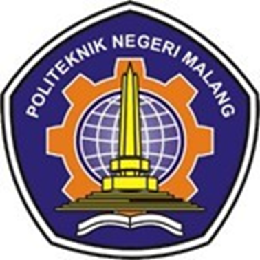

TEKNIK INFORMATIKA
Pada tahun 2010 berdasarkan kebutuhan masyarakat dan industri terkait dengan program diploma 4 bidang informatika maka poli 5 mendirikan program studi baru di rumah 4 teknik informatika ada awal berdirinya jumlah peserta didik program D-IV TI hanya terdiri dari 46 mahasiswa namun pada tahun 2015 jumlah peserta didik pro ditempati telah mengalami peningkatan menjadi 545 mahasiswa
Perkembangan jumlah mahasiswa yang sangat pesat baik di program studi D-III MI ataupun D-IV TI mendorong pimpinan di polinema untuk menyatukan kedua program studi tersebut dalam satu organisasi jurusan baru terpisah dari jurusan teknik elektro di bawah jurusan baru terpisah dari jurusan teknik elektro dan pada tahun 2015 berdasarkan SK direktur nomor 53 dalam rangka peningkatan mutu pengelolaan dan optimasi sumber daya dibentuklah jurusan teknologi informasi JTI dengan prodi D-III MI dan D-IV TI